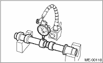
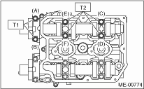
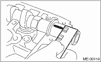
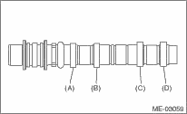
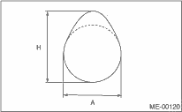
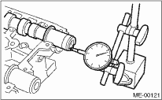

MECHANICAL(H4DO) > Camshaft
1. Measure the bend, and repair or replace if necessary.
Service limit:
0.020 mm (0.0008 in)

2. Check the journal for damage and wear. Replace if faulty.
3. Check the cutout portion for the sensor on the camshaft for damage. Replace if faulty.
4. Measure the outside diameter of camshaft journal. If the journal diameter is not within specification, check the oil clearance.
|
Camshaft journal | ||
|
Front |
Center, rear | |
|
Standard |
37.946 — 37.963 mm (1.4939 — 1.4946 in) |
29.946 — 29.963 mm (1.1790 — 1.1796 in) |
5. Measurement of the camshaft journal oil clearance:
(1) Clean the bearing caps and camshaft journals.
(2) Place the camshafts on cylinder head. (Without installing the valve lifter)
(3) Place a plastigauge across each camshaft journals.
(4) Gradually tighten the cap in at least two stages in alphabetical order shown in the figure, and then tighten to specified torque. Do not turn the camshaft.
Tightening torque:
T1: 9.75 N·m (1.0 kgf-m, 7.2 ft-lb)
T2: 20 N·m (2.0 kgf-m, 14.5 ft-lb)

(5) Remove the bearing caps.
(6) Measure the widest point of the plastigauge on each journal. If the oil clearance exceeds the limit, replace the camshaft. If necessary, replace the camshaft caps and cylinder head as a set.
Standard:
0.037 — 0.072 mm (0.0015 — 0.0028 in)
Service limit:
0.10 mm (0.0039 in)

(7) Remove plastigauge thoroughly.
6. Check the cam face condition; remove the minor faults by grinding with oil stone. Measure the cam height H. Replace if it exceeds the limit.
Cam height H (DOHC Non-turbo model):
Standard:
Intake
46.75 — 46.85 mm (1.840 — 1.844 in)
Exhaust (1, 3 ports)
45.65 — 45.75 mm (1.780 — 1.801 in)
Exhaust (2, 4 ports)
44.35 — 44.45 mm (1.746 — 1.750 in)
Service limit:
Intake
46.65 mm (1.837 in)
Exhaust (1, 3 ports)
45.55 mm (1.793 in)
Exhaust (2, 4 ports)
44.25 mm (1.742 in)
Cam height H (DOHC Turbo model):
Standard:
Intake
46.55 — 46.65 mm (1.833 — 1.837 in)
Exhaust
46.75 — 46.85 mm (1.841 — 1.844 in)
Service limit:
Intake
46.45 mm (1.829 in)
Exhaust
46.65 mm (1.837 in)

|
(A) |
Cam for 1 port |
|
(B) |
Cam for 2 port |
|
(C) |
Cam for 3 port |
|
(D) |
Cam for 4 port |
Cam base circle diameter A:
37.0 mm (1.457 in)

7. Measure the thrust clearance of camshaft with setting the dial gauge at end of camshaft. If the thrust clearance exceeds the limit, replace the caps and cylinder head as a set. If necessary replace the camshaft.
Standard:
0.068 — 0.116 mm (0.0027 — 0.0046 in)
Service limit:
0.14 mm (0.0055 in)
